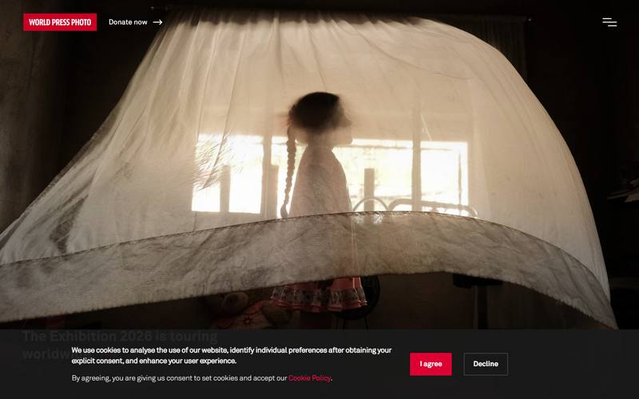
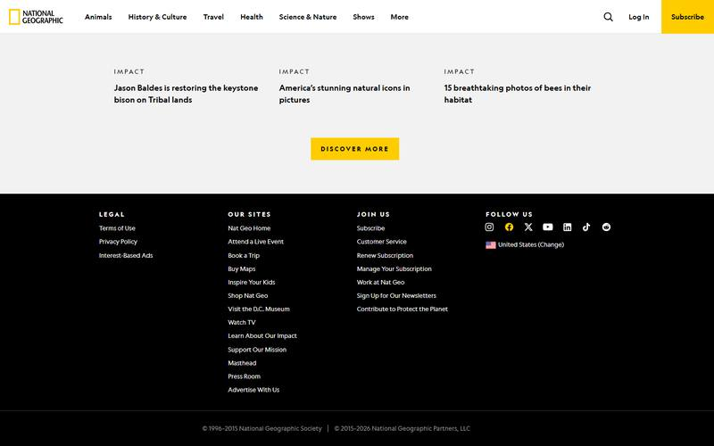
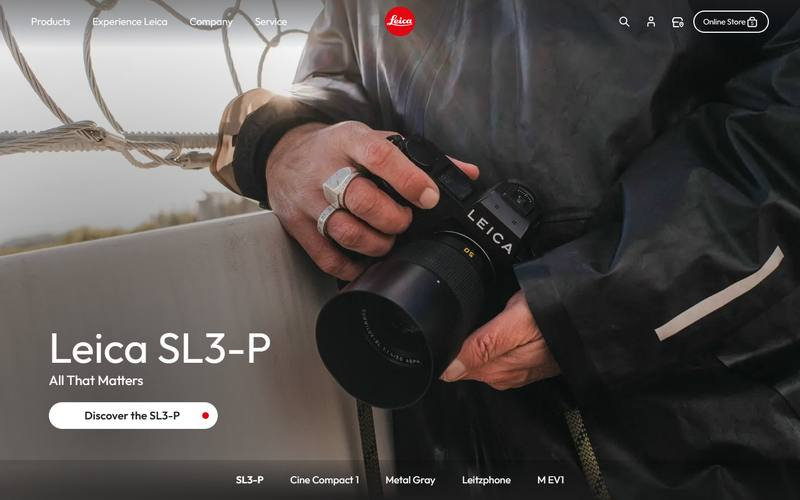
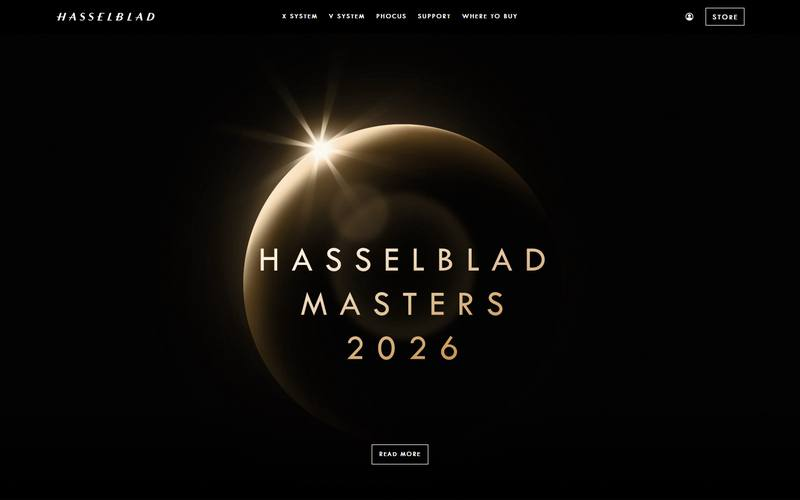
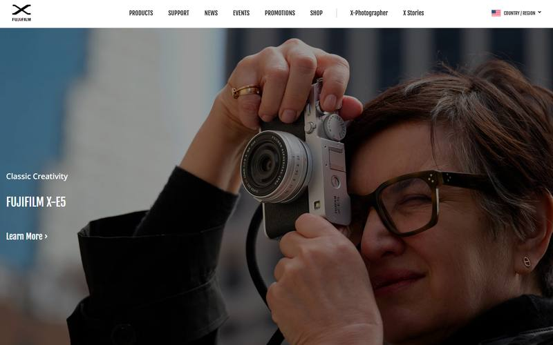
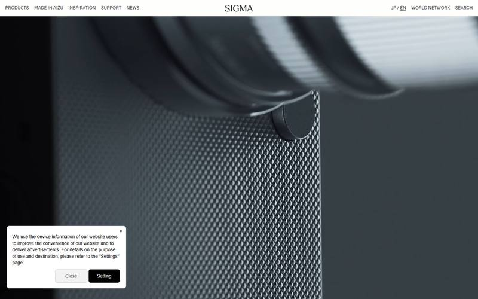
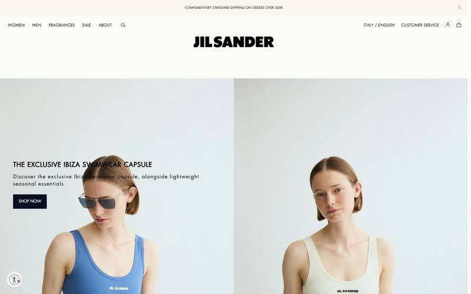
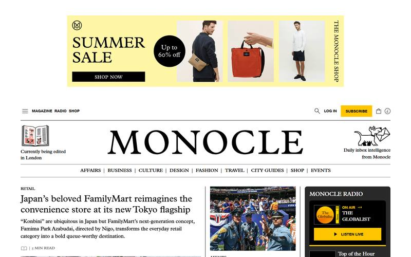
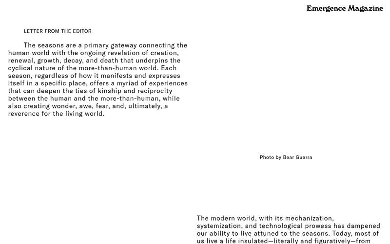

第一辑被批评得对:合集站里捞出来的是「网页设计圈的好学生」,不是行业殿堂。这一辑按更严的标准重新出发: 国家地理、世界新闻摄影奖、徕卡、哈苏、富士、适马、The Row、Jil Sander、Acne、Monocle、Emergence—— 13 个站拿下 12 个(马格南把机器人挡在门外,Aperture 超时,已记进待办)。 另外把网上公开流传的高质量设计提示词扒了回来,蒸馏成第三节的「军规」。

可抄:照片满幅、文字进暗部;机构红块的克制用法。

可抄:「三色纪律」;眉题的字距用法。

可抄:满幅/卡片的交替节奏;巨大轻字重标题;「一颗红点」级别的品牌克制。

可抄:12px + 2px 字距的小型大写标题;细线框按钮。

可抄:让「使用中」的场景当封面,而不是摆拍的成品。

可抄:材质微距当头图(和卡纸质感天然同构);把「出处」写进导航。

可抄:报头当纪念碑;双联分屏;正文字距的冷静感。

可抄:报纸式报头版;细竖线栏目条;那行「正在伦敦编辑中」。

可抄:动词分组的内容索引(咱们的作品/文章/收藏可以是 看/读/藏);长卷式一幕一幕的节奏。
哈苏 12px、适马 13px、The Row 13px、Jil Sander 12px、Acne 12px——顶级品牌的「标题」是加字距的小型大写;徕卡反着走:76px 但字重 400。要么巨大而轻,要么极小而稳;中间字号只属于杂志正文。模糊的 24px 加粗标题是平庸的标志。
国家地理眉题 3px、哈苏 2px、Emergence 正文 1.33px、The Row 的报头几乎一字一停。字距花的是空间,空间就是钱——网页上最便宜的奢侈感来源。中文同理:加字距的小字比加粗的大字贵气得多。
徕卡整页是「满幅照片 → 白底卡片 → 满幅 → 卡片」的一幕幕交替,Emergence 是「色场 → 微距 → 文字 → 索引」的长卷。页面不是一个容器,是一条展览动线——每一屏该是一幕,幕与幕之间要换气。
适马开屏是金属滚花的微距。咱们的对应物是纸:卡纸的纹理、撕边、叠层本身就能当 hero,不一定要放作品或照片。这是卡纸语言里还没用足的一张牌。
适马把「MADE IN AIZU(会津制造)」放进导航,徕卡首页排着「1914–2025」的世纪线,Monocle 写「currently being edited in London」。你在哪儿、从哪来、正在干什么,本身就是设计素材。个人网站尤其适用——它天生就是「一个人的出处」。
| 军规 | 内容 |
|---|---|
| 先取真值 | 「凭空画高保真是最后手段」——先收集真实的色值、字体、素材再动笔。咱们的 craft 真值页就是这条的践行 |
| 动笔前申报系统 | 写下:字号梯、1–2 个底色、布局节奏、节标题模式——然后整页只许用申报过的。防止越画越乱 |
| 硬底线 | 手机上可点的东西 ≥ 44px;正文对比度过 AA(普通字号至少 4.5:1);尊重「减少动效」的系统设置 |
| 反 AI 味清单 | 禁:大渐变底、左侧彩条强调卡、Inter/Roboto 默认字、假文占位、纯装饰性区块。AI 生成的网页有三张俗脸(奶油底+衬线+赤陶色 / 黑底+荧光绿 / 报纸式细线密栏)——撞脸即重画 |
| 一次给三个方案 | 「给选项,不给唯一答案」——从保守到大胆排开,你挑、你混。以后我交视觉方向必须这么交 |
| 七维自审 | 层级 / 间距 / 色彩 / 无障碍 / AI 味 / 动效 / 文案,逐维打分列罚单,按「影响 × 省力」排序修。「不推荐验证不了的东西,引用证据」——和咱们第一纪律同源 |
| 性格预算 | 放肆只花在一处(第一辑就发现了,提示词圈叫它 signature element);其余全部守申报过的系统 |
流派地图:公开提示词圈把网页美学分成 9 族。咱们的卡纸方向属于「Warm Editorial(暖编辑)」族,本辑相机厂属于「Editorial Minimalism(冷编辑)」族——两族血缘最近,手法可以互相借。
| 板块 | 第一辑说 | 殿堂级升级 |
|---|---|---|
| 首页 hero | craft 壳 + 清单心 | 徕卡节奏:满幅一幕(可以是纸的材质微距)+ 巨大轻字重标题;往下才进卡片 |
| 作品详情 | 一屏一图 + 计数 | 照旧,但标题降到「哈苏级」:小型大写 + 字距,让图独占音量 |
| 栏目导航 | 三段式 + 方括号 | 可以再加 Monocle 的细竖线栏目条;或 Emergence 的动词分组(看 / 读 / 藏) |
| 自我介绍 | 词典式开场 | 叠加「出处即品牌」:你在哪、正在做什么,当一行小字放进报头区 |
| 标题体系 | (未定) | 两极制:展示级 = 大而轻(衬线/楷体);功能级 = 小而稳(加字距);取消中间档 |
{kind=link}
{kind=link}
{kind=link}
{kind=link}
{kind=link}
{kind=link}
{kind=link}
{kind=link}
{kind=link}
{kind=link}
{kind=link}